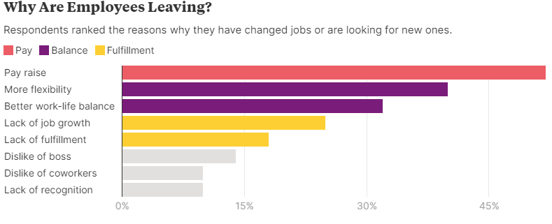

How Companies Can Rebuild Employee Loyalty
Addressing pay, flexibility, and purpose can help organizations attract and retain staff
The end of loyalty has been a long time coming. Employee loyalty was in decline for two decades even before
the pandemic. Now, after more than a year of juggling a health crisis, onerous workloads, and family
responsibilities, the resignation rate in most major countries has reached a new high.
That’s not a surprise considering only about half of employees – whether white or blue collar – are
satisfied with their jobs, according to September 2021 data from our monthly survey, which has included more
than 100,000 people in 10 countries during the last year. Of those surveyed about 25% in the US, the UK,
Canada, and Brazil have quit or plan to leave, while 20% in Germany, 17% in France, and 14% in Spain and
China are resigning. And that doesn’t include an additional 18% of employees globally, who are passively
looking for new work.
How did we lose loyalty?
The pandemic accelerated the change, but the decline in loyalty has been decades in the making. Minimum wage
hasn’t kept up with growth in the cost of living during the last 50 years, bringing an end to the
traditional “family wage” and establishing two full-time earners as the new norm required for most families
to make ends meet. This is not only a blue collar problem. As productivity has risen, its benefits have
accrued disproportionately to shareholders rather than employees – with this phenomenon holding true across
income levels.
Millennials, with their frequent “job hopping” foreshadowed the great resignation. The oldest of this
cohort, now 40, has never been able to rely on loyalty from employers. They graduated during the financial
crisis with limited job options and fewer corporate pensions and discovered that mobility – rather than
company allegiance – was the key to increasing pay and expanded opportunities.
Fast forward to 2021. The four generations in the workforce are all witnessing continued global disruptions
from the pandemic, and everyone from Gen Z to Baby Boomers are tired of stagnant wages and looking for more
security and opportunity. Hard work and quiet dedication are no longer a reliable path to prosperity or
upward mobility. As this reality has hit home, older generations are starting to behave more like those
“disloyal” Millennials.

How can we bring back loyalty?
Even as the pandemic recedes, employers are finding that their employees have acquired some durable new
points of view, including a more diverse set of demands than they may have anticipated. Topping the new list
of “must haves” are better pay, greater flexibility, and a sense of personal fulfillment. In the past, there
were predictable tradeoffs: flexible shifts meant lower salaries and fewer opportunities. Companies that
paid the most tended to retain the best talent – not anymore. A new employee-employer contract is emerging
that reflects the shifted values emerging from our collective trauma.
First and foremost, people today are focused on their most basic needs: safety, health, and freedom from
worry, according to our survey. For organizations looking to attract and retain employees, addressing these
foundational needs is the first line of defence.
1. Offer competitive wages
Step one is to stop the exodus. More than half the employees we surveyed cited better pay as a reason to
leave. The need for more money topped the list of must-haves across nearly all populations, including
gender, profession, and nationality.
Companies are responding to employee shortages by recalibrating their pay to be more competitive. In the US,
everyone from airlines to retailers have increased their minimum wage to $15 an hour for entry level
positions and boosted salaries to existing employees to dissuade them from leaving. This is a necessary
first step and forms the foundation of employee retention. But as the turnover data suggests in some of the
highest paying companies in the world, it is not enough.
2. Provide flexibility and balance
Beyond pay, employees value flexibility. Almost 40% of job seekers said they want better work life balance.
They’ve grown accustomed to remote work and expect it, at least a few days a week. Almost two-thirds of
those we surveyed said remote work is important, and 63% said a hybrid work model is optimal. “I’ve always
enjoyed staying home and have valued work-life balance,” said one survey participant. “But now I have
stronger expectations, and I would leave my job if my boss wasn’t accommodating.”
Even before the pandemic, leading companies began offering benefits ranging from job sharing to unlimited
vacation days to provide more flexibility and prevent burnout. Work-life balance ratings at one tech firm
increased by 10% since 2015 when it started offering unlimited vacation and no-meeting Wednesdays, which
gives employees more flexibility and uninterrupted work time.
If employees have anything to say about it (and they do), hybrid models are here to stay. Several countries
recently passed legislation that encourages employee flexibility. Iceland, for example, has experimented
with a four-day work week, while Finnish employees can decide when and where to work half of their 40 hours.
In a world where the hybrid model is emerging as the working model of the future, being flexible has never
been more relevant.
3. Reinforce purpose and culture
While employees need a decent paycheck, and value a flexible working model, many also hunger for something
more. One in five cited lack of fulfillment as the reason why they are leaving their jobs. The antidote to
this lack of fulfillment is enabling a sense of purpose at work and an inclusive company culture: creating
conditions where employees feel their work is meaningful, that their contributions are valued, and that they
feel a sense of belonging.
This is perhaps the hardest issue for companies to address because it requires time and commitment to build
relationships, access to new skills and opportunities to feel valued. If anything, remote work has made it
harder than ever for companies to build a sense of shared purpose, but the rewards for doing so are immense
– a rekindling of the bonds of loyalty.
Which organizations will succeed?
As one era of employee loyalty ends, a new one can begin. Organizations that successfully rebuild their
employee-employer contract in line with the fundamental hierarchy of human needs – providing competitive
wages (the foundation required for a sense of safety and security in today’s economy), a flexible working
model (which allows employees to also address their mid-tier needs for connection, belonging, and leisure),
and a sense of purpose and culture (the keystone that allows people to feel that they belong and that the
way they’re spending their time is fundamentally worthwhile) will be the ones best positioned to win, not
only in the current pandemic-catalyzed war for talent, but in decades to come.